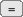

VIMINFO
| Tags | Action | Sous-action | Shortcut | Mnémo |
|---|---|---|---|---|
| Définir | les éléments à sauver dans le fichier viminfo | |||
| Note | Voir les paramètres ci-après | |||
| Définir | le nombre de fichiers pour lesquels il faut sauver les marques locales. | |||
| Exemple | :set viminfo='1000 => on gardera les marques locales de 1000 fichiers |
|||
| Définir | si les marques globales doivent être sauvées ou non | |||
| Exemple | :set viminfo=f1 => les marques globales seront conservées |
|||
| Définir | le nombre de ligne d'historique de recherche | |||
| Note | l'« historique de recherche » concerne les recherches qui ont été entreprises par / |
|||
| Exemple | :set viminfo=/100 |
|||
| Définir | le fait de conserver la liste des buffers | % | ||
| Exemple | :set viminfo=% |
|||
| Définir | de conserver les variables globales | ! | ||
| Exemple | :set viminfo=! |
|||
| Définir | un viminfo type | :set viminfo='1000,f1,:100,/100,%,! | ||
| Note | signifie qu'on conserve les marques locales de 1000 fichiers ('1000), qu'on conserve les marques globales (f1), qu'on conserve 100 lignes d’history (:100) et 100 ligne d'historique de recherche (/100), qu'on sauve et restaure la liste des buffers (%) et qu'on sauve les variables globales (!). |
|||
| Forcer l'écriture | de viminfo | |||
| Note | Sans précision de fichier, c'est le fichier ~/.viminfo qui sera utilisé. |
|||
| Forcer la lecture | du viminfo | |||
| Note | Sans précision de fichier, c'est le fichier ~/.viminfo qui sera utilisé. |
|||
HELP
| Tags | Action | Sous-action | Shortcut | Mnémo |
|---|---|---|---|---|
| aide | Aide | Ouvrir | ||
| tag | Se rendre | à une tag (pas de ] sur mac) |
||
| tag | Revenir | à la tag précédente | ||
| tag | Passer en revue | les tags parcourues | ||
| aidecommande | Obtenir l’aide | d'une commande dans un mode particulier | ||
| Exemple | i_CTRL-h — Préfixes : i (insert), v (visual), c (command) |
|||
| aideoption | Obtenir l’aide | :sur une option | :help '<option>' | |
| Note | Il faut donc l'entourer d'apostrophes simple | |||
| Exemple | :help 'nowrap' |
|||
| Obtenir de l’aide | sur le mot sous le curseur | |||
| Lancer Vim | en mode Verbose | $> vim -V <nombre> | ||
| Note | Utile pour débugger les scripts Vim. | |||
PREMIÈRES COMMANDES UTILES
| Tags | Action | Sous-action | Shortcut | Mnémo |
|---|---|---|---|---|
| Activer le mode | INSERT en se plaçant au bout de la ligne | |||
| Activer le mode | INSERT en se plaçant après le caractère courant | |||
| Activer le mode | INSERT avant le caractère courant | |||
| Note | La première touche frappée ajoutera un caracètre avant le curseur. | |||
| Activer le mode | VISUAL normal | |||
| Activer le mode | VISUAL ligne | |||
| Activer le mode | VISUAL block | |||
| annulerquitter | Quitter un mode | quelconque, annuler, renoncer | ||
| action | Répéter | la dernière action | ||
| macro | Enregistrer | une macro | ||
| macro | Jouer | une macro | ||
SESSIONS
| Tags | Action | Sous-action | Shortcut | Mnémo |
|---|---|---|---|---|
| Enregistrer | la session courante | |||
| Exemple | :mksessions session.vim => enregistre l’état courante dans "session.vim" |
|||
| Restaurer | une session précédente | [COMMAND] :so[urce] <fichier session> $> vim -c ":source <fichier session>" |
||
| Exemples | :source session.vim => restaure la session enregistrée dans "session.vim"$> vim -c ":source session.vim" |
|||
| Définir | ce qui doit être mémorisé dans une session | |||
| Valeurs | avec <element> :buffers sauve les buffersglobals sauve les variables globales qui commencent par une majuscule et contiennent au moins une minusculehelp sauve la fenêtre d’aideblank sauve les fenêtres vides ouvertesoptions sauve toutes les options et la carte clavier (keyboard mapping)winpos sauve les positions de fenêtre (GUI)resize sauve la taille de l’écranwinsize sauve les tailles des fenêtres si possibleslash sauve les paths escapés (pour utilisation de unix/mac à windaubes)unix sauve avec des retours chariots unix |
|||
MAPPING
| Tags | Action | Sous-action | Shortcut | Mnémo |
|---|---|---|---|---|
| Définition | du mapping | |||
| Note | Le mapping est le fait d’associer une touche (ou une combinaison de touches) à une action. C’est une sorte de macro. | |||
| Définir | une map | |||
| Exemples | :map <F1> "ay => en pressant la touche F1, on copie le texte sélectionner (y) dans le registre "a" ("a):map <F2> "ap => en pressant la touche F2, on colle le texte du registre "a" au curseur.:map ^A dd => en pressant , on delete la ligne courante:map ^B ^A => en pressant , on produit la même action que |
|||
| Définir | une map pour un mode particulier | |||
| Valeurs | avec lettre mode :i (im[ap]) pour le mode c (cm[ap]) pour le mode [COMMAND]Note : :map! pour les deux modes v (vm[ap]) pour le mode n (nm[ap]) pour le mode s (sm[ap]) pour le mode [SELECT]o (om[ap]) pour l’operator pending (mode dans lequel on entre lorsqu’une touche attend une « motion », par exemple « d » pour delete) |
|||
| Note | Apparemment, pour que des lettres (par exemple « CAM ») se transforme en autre chose dans le mode imap (voir l’exemple). |
|||
| Exemple | :imap CAM Camille => Taper produit l’écriture de « Camille ». |
|||
| Lister | toutes les maps | |||
| Supprimer | une map | |||
| toutes les mappings | ||||
SNIPPETS
| Tags | Action | Sous-action | Shortcut | Mnémo |
|---|---|---|---|---|
| snippet | Définir | une abbréviation/un snippet | :ab[breviate] <snippet> <remplacement> | |
| Note | Cette abbréviation sera valable pour le mode ia[bbrev] pour un snippet qui ne fonctionne qu’en mode insertion. |
|||
| Exemples | :abbreviate @phil Philippe Perret <philippe.perret@yahoo.fr> => en tapant @phil, on insert le texte 'Philippe Perret etc.':ab multiline Une définition<CR>Sur plusieurs<CR>lignes => à mettre dans un fichier à charger ou .vimrc. |
|||
| snippet | Définir | une abbréviation pour le mode INSERT seulement | :ia[bbrev] <snippet> <remplacement> [dans fichier config] iabbrev <snippet> <remplacement> |
|
| Note | On peut utiliser |
|||
| Exemples | :iabbrev C Camille:ia J Joaquim |
|||
| snippet | Définir | une abbréviation pour le mode COMMAND seulement | :ca[bbreviate] <snippet> <remplacement> | |
| Exemples | :cabbreviate l list:ca J Joaquim |
|||
| snippet | Expendre | une abbréviation en mode INSERT | ||
| snippet | Supprimer | une abbréviation précédemment définie | :una[bbreviate] <snippet> | |
| snippet | Supprimer | une abbréviation du mode INSERT | :iuna[bbreviate] <snippet> | |
| snippet | Supprimer | une abbréviation du mode COMMAND | :cuna[bbreviate] <snippet> | |
| snippet | Supprimer | toutes les abbréviations | ||
| snippet | Supprimer | toutes les abbréviations du mode INSERT | ||
| snippet | Supprimer | toutes les abbréviations du mode COMMAND | ||
| snippet | Afficher | toutes les abbréviations | :ab[breviate] | |
| snippet | Enregistrer | les abbréviations (et mapping et set) dans un fichier | :mkvimrc <path/to/fichier> | |
| Recharger | les abbréviations (+ map et set) depuis un fichier (créé avec mkvimrc) |
:so[urce] <path/to/fichier> | ||
FENÊTRES & LAYOUT
| Tags | Action | Sous-action | Shortcut | Mnémo |
|---|---|---|---|---|
| Ouvrir | plusieurs fichiers dans des layouts | $> vim -o file1 path/file2 file3 | ||
| Exemple | Indiquer un nombre pour limiter le nombre de layouts : vim -o3 |
|||
| Ouvrir | la fenêtre alternative | |||
| preview | Ouvrir | dans la fenêtre de prévisualisation | ||
| Note | Ouvre la définition de la <fonction> dans la fenêtre de prévisualisation. |
|||
| preview | Fermer | la fenêtre de prévisualisation | ||
| split | Split | (signature générale) | ||
| splitfenêtre | Spliter | la fenêtre active | :sp[it] |
|
| splitfichier | Spliter | la fenêtre en créant un nouveau fichier dans le nouveau layout | ||
| splitfenêtre | Spliter | verticalement la fenêtre active | :vs :vsp :vsplit |
|
| layoutligne | Spliter | en définissant la taille (lignes) du nouveau layout | <nombre ligne>sp | |
| layoutligne | Spliter | verticalement en définissant la taille (colonne) du nouveau layout | <nombre colonnes>vsp | |
| Faire défiler | deux fenêtres en même temps | |||
| Note | La procédure exacte est la suivante : il faut ouvrir deux fichiers en splitant verticalement la fenêtre (:vert split) puis taper :set scrollbind pour chacune des layouts. |
|||
| layoutsize | Redimensionner | précisément le layout courant | ||
| Exemples | :resize 10 => mets le layout à 10 lignes:resize +10 => augmente le layout de 10 lignes:resize -10 => diminue le layout de 10 lignes |
|||
| Redimensionner | verticalement précisément le layout courant | |||
| Exemples | :vert :resize 100 => mets le layout à 100 colonnes:vert :resize +100 => augmente le layout de 100 colonnes:vert :resize -100 => diminer le layout de 100 colonnes |
|||
| layoutsize | Redimensionner | le layout en l'aggrandissant | ||
| layoutsize | Redimensionner | en maximisant le layout courant | ||
| layoutsize | Redimensionner | le layout en le diminuant | ||
| layoutsize | Redimensionner | tous les layouts à la même taille | ||
| layout | Activer | un layout à l'autre | ||
| Activer | le layout en dessous |  |
comme pour descendre dans Vim |
|
| Activer | le layout à droite | comme pour aller à droite dans Vim | ||
| Activer | le layout au-dessus | comme pour monter dans Vim | ||
| Activer | le layout à gauche | comme pour aller à gauche dans Vim | ||
| fenêtre | Fermer | la fenêtre courante | ||
| Fermer | toutes les fenêtres sauf la fenêtre courante | |||
| fenêtre | Maximiser | , ne garder que la fenêtre courante | :only |
|
| Positionner | la ligne courante en haut de l'écran | |||
| Positionner | la xième ligne en haut de l'écran | |||
| Positionner | la ligne courante en bas de l'écran | |||
| Positionner | la ligne courante au milieu de l'écran | |||
| Exécuter | une commande dans toutes les fenêtres ouvertes | |||
| Mémoriser | la position des fenêtres et tabs | |||
| Note | ajouter « ! » à la commande pour forcer la réécriture d’un fichier précédent | |||
| Recharger | la position des fenêtres et tabs | |||
| Note | Ce fichier doit avoir été sauvé avec :mkview. |
|||
| Définir | les éléments sauvés par mkview |
:set viewoptions=<L1>,<L2>,...<Lx> | ||
| Valeurs | avec <Lx> :cursor sauve la position du curseurfolds sauve l’état courant des foldingsoptions sauve les options incluant les options locales pour les buffers et fenêtres |
|||
TABS
| Tags | Action | Sous-action | Shortcut | Mnémo |
|---|---|---|---|---|
| Lister | toutes les tabs ouvertes | |||
| Ouvrir | un fichier dans une nouvel tab | |||
| Ouvrir | un fichier existant dans une nouvel tab | |||
| Ouvrir | plusieurs fichiers en même temps dans des tabs | $> vim -p file1 path/file2 path/to/file3 | ||
| Exemple | Ajouter un nombre pour limiter le nombre d'onglets à ouvrir : vim -p4 |
|||
| Fermer | la tab courante | |||
| Fermer | une tab quelconque | |||
| Fermer | toutes les tabs sauf la courante | |||
| Activer | la tab suivante (première si dernière) | |||
| Activer | la tab précédente (dernière si première) | |||
| Activer | la première tab | |||
| Activer | la dernière tab | |||
| Activer | une tab pour son index (1-start) | |||
| Exécuter une commande | dans toutes les tabs ouvertes | |||
| Exemple | :tabdo :%s/old/new/g => remplace le texte "old" par "new" dans toutes les tabs. |
|||
| Placer | une tab après une autre | |||
| Définir | quand afficher la ligne d’onglets | |||
| Valeurs | avec <nombre> :0 : ne jamais afficher 1 : afficher quand onglets 2 : toujours afficher |
|||
FICHIERS
| Tags | Action | Sous-action | Shortcut | Mnémo |
|---|---|---|---|---|
| [Ne plus] Produire | un backup | |||
| Définir | une extension propre pour le backup | :set backupext=<extension> | ||
| Exemple | :set backuptext=.bak => le backup de fichier.txt sera fichier.txt.bak. |
|||
| Définir | le dossier du backup | :set backupdir=/path/to/bckup/folder/ | ||
| Note | Par défaut, c'est le dossier du fichier. Si un dossier est choisi de cette manière, attention aux collisions de noms. | |||
| Définir | les fichiers à ne pas backuper | :set backupskip=... | ||
| Ouvrir | le fichier sous le curseur | |||
| Ouvrir | le fichier en lecture seule (depuis Vim) | |||
| Ouvrir | un fichier en lecture seule (depuis Terminal) | $> vim -R fichier.ext $> view fichier.ext |
||
| Ouvrir | un fichier en encryption | $> vim -x secret.txt | ||
| Ouvrir un fichier | sans swap file | $> vim -n secret.txt | ||
| Note | Utilisé justement pour les fichier encryptés, afin que les swap-files ne puissent être consultés pendant l'édition du fichier apr un utilisateur qui auraient des superprivilèges. | |||
| Ouvrir | un fichier quelconque en édition | => La liste du dossier courant s'affiche <debut>TAB => Le nom se développe. |
||
| Ouvrir | un fichier sans enregistrer les changements du fichier précédent | |||
| split | Ouvrir | un fichier en splitant la fenêtre | ||
| Exemple | :sp ~/.vimrc (ouvre vimrc en splitant la fenêtre) |
|||
| Ouvrir un fichier | en se plaçant sur une certaine ligne | |||
| Ouvrir un fichier | en se plaçant sur un mot particulier | |||
| Ouvrir | plusieurs fichiers en même temps | :next <file1> <file2> etc. :args |
||
| Nouveau | layout en splitant la fenêtre courante | |||
| Enregistrer | le fichier courant | |||
| Enregistrer | tous les fichiers courants (même les buffers cachés) | |||
| Enregistrer | et quitter le fichier courant | |||
| Enregistrer | sous un autre nom | |||
| Note | Toutes les sauvegardes suivantes se feront dans ce fichier, contrairement à :write qui n'enregistre que ponctuellement dans un autre fichier. |
|||
| Enregistrer | en forçant un fichier ouvert en lecture seule | |||
| Enregistrer | seulement un rang de lignes dans un fichier | |||
| Exemple | :20,41 monfichier.txt enregistre les lignes 20 à 41 du buffer courant dans le fichier monfichier.txt |
|||
| printpostscript | Enregistrer | le texte au format PostScript | ||
| Note | En fait, on utilise la commande pour imprimer, qu’on détourne vers un fichier. | |||
| Fermer | le fichier courant sans l’enregistrer | |||
| Fermer | le fichier courant en l’enregistrant [dans un autre fichier] | |||
| Note | exit, contrairement à write, ne sauve que si le fichier a été changé. |
|||
| Fermer | le fichier courant en enregistrant un certain rang de lignes dans un autre | |||
| Exemple | :.,.+10 exit ~/mon.txt => enregistre les dix lignes à partir de la ligne courante dans le fichier mon.txt et ferme le fichier. |
|||
| Fermer/quitter | tous les fichiers | |||
| Note | Ajouter ! à la fin pour forcer la fermeture sans enregistrer les modifications non enregistrées. |
|||
| Fermer/quitter | tous les fichiers en les enregistrant | |||
| dossier | Définir | le dossier courant en path et tous ses sous-dossiers | :set path=$PWD/le/dossier/** | (ne pas oublier les ** à la fin) |
| Rechercher | un fichier et l'ouvrir | :find <nom exact du fichier.extension> | (il faut avoir setté le path avant : :set path=...) |
|
| Rechercher | un fichier et l'ouvrir en splittant la fenêtre | :sfind <nom exact du fichier.extension> | ||
| Lister | dans le buffer courant les fichiers/dossiers courants | |||
| comparerdiff | Comparer | deux fichiers | $> vimdiff <path/to/file1> <path/to/file2> [COMMAND] :vert splitdiff <path/to/file2> |
|
| Note | Avec la seconde solution, le premier fichier doit être ouvert. | |||
| Aller | à la [xième] différence suivante | |||
| Revenir | à la [xième] différence précédente | |||
| diff | Modifier | l'autre fichier avec le texte du fichier courant | ||
| diff | Modifier | l'autre fichier avec le texte du fichier courant | ||
| Modifier un fichier | à l'aide d'un script bash (shell script) | 1. Écrire le shell 2. L'enregistrer (dans change.vim par exemple) 3. $> vim -es monfichier.ext < change.vim |
||
| Note | les options signifient : e = en mode ex, qui permet de shell script, s = en mode silencieux, pour ne pas avoir les retours de commande. |
|||
| Exemple | Pour remplacer le mot PHIL par MARION dans plusieurs fichiers : 1. Enregistrer le code suivant dans le fichier change.vim ::%s/PHIL/MARION/g:write:quit avec des PHIL.$> vim -es fichier.txt < change.vim`=> Tous les PHIL sont remplacés par des MARION dans le fichier. |
|||
| Revenir à la version | du fichier un certain temps avant | |||
| Note | Avec <temps> qui peut être en secondes ([x]s) en minutes ([x]m) ou en heures ([x]h). | |||
| Exemple | :earlier 1h fait revenir à l'état du fichier une heure plus tôt. |
|||
| Revenir à la version | du fichier un certain temps après (quand :earlier a été utilisé) | |||
| Note | Avec <temps> qui peut être en secondes ([x]s) en minutes ([x]m) ou en heures ([x]h). | |||
| Exemple | Quand on a joué avant :earlier 1h (retour à l'état du fichier 1 heure avant), la commande :later 1h fait revenir au dernier état du fichier. |
|||
MULTI-FICHIERS
| Tags | Action | Sous-action | Shortcut | Mnémo |
|---|---|---|---|---|
| Définir | les paths par défaut | |||
| Valeurs | avec path/N :<dossier>/* => tous les dossiers du dossier<dossier/** => toute la hiérarchie du dossier. => le dossier du fichier courant (fichier activé au moment de l’opération) |
|||
| Définir | un dossier au top de la recherche | |||
| Exemple | :set path ^= ../lib place le dossier lib situé dans le dossier parent du dossier parent dans les paths de recherche. |
|||
| Ouvrir | plusieurs fichiers dans des buffers | $> gvim path/to/file1 path/to/file2 | Ne semble pas fonctionner sur mac par défaut. | |
| Passer | au(x) fichier(s) suivants | |||
| Passer | au(x) fichiers(s) précédents | |||
| Passer | au dernier fichier édité | |||
| Passer | au premier fichier | |||
| Passer | au dernier fichier | |||
| Passer | au fichier suivant en enregistrant le courant | |||
| Passer | au fichier suivant sans enregistrer le courant | |||
| Passer | en enregistrement automatique au changement de fichier | |||
| Sortir | de l’enregistrement automatique au changement de fichier | |||
BUFFERS
| Tags | Action | Sous-action | Shortcut | Mnémo |
|---|---|---|---|---|
| Nouveau | buffer sans nom (sans fichier) | |||
| Afficher | la liste des buffers | |||
| Activer | un buffer quelconque | => La liste des buffers s'affiche |
||
| Activer | le [xième] buffer suivant | |||
| Activer | le [xième] buffer précédent | |||
| Activer | le [xième] buffer modifié [en splitant] | |||
| Activer | le premier buffer | |||
| Activer | le dernier buffer | |||
| Activer | un buffer par son numéro (dans la fenêtre active) | |||
| split | Activer | un buffer en splitant horizontalement la fenêtre | ||
| split | Activer | un buffer en splitant verticalement la fenêtre | ||
| Activer | un buffer par le nom du fichier/path dans la fenêtre active | |||
| Ouvrir | tous les buffers dans des fenêtres | |||
| Ajouter | un buffer (un fichier) à la liste, sans l’ouvrir | |||
| Masquer | le buffer courant | |||
| Supprimer | le buffer courant | |||
| Supprimer | le buffer courant sans enregistrer | |||
DÉPLACEMENTS
| Tags | Action | Sous-action | Shortcut | Mnémo |
|---|---|---|---|---|
| Marquer | la ligne courante. | |||
| Marquer | une ligne pour son numéro. | |||
| Note | Avec , on n’est pas obligé de laisser une espace avant la lettre du registre. | |||
| Déplacer | plusieurs lignes à une ligne précise | |||
| Exemples | :2,4 move 9 => déplace les lignes de 2 à 4 (comprise) APRÈS la 9<sup>e</sup> ligne.:.,.+2 move 10 => Si la ligne courante (.) est la 5e, copie les lignes 5 à 7 après la ligne 10. |
|||
| Retourner | à une position précédente | |||
| Retourner | à la position précédente (jump) | |||
| Retourner | à la position suivante | |||
| Retourner | au dernier changement | |||
| Note | On peut avoir la liste des changements avec :changes. |
|||
| Retourner | au xième changement | |||
| Note | On peut avoir la liste des changements avec :changes. |
|||
| document | Aller | au début du document | ||
| mot | Aller | au mot suivant | ||
| mot | Aller | à la fin du mot suivant | ||
| mot | Aller | à la fin du [xième] mot précédent | ||
| Aller | au début de la ligne « écran » suivante | |
||
| Note | La ligne « écran » correspond à la nouvelle ligne qu'on voit à l'écran, mais qui appartient peut-être à la même « ligne texte » que la ligne écran précédente. | |||
| Aller | au début de la « ligne texte » suivante | |
||
| Note | Cf. la note concernant la commande précédente | |||
| Aller | au début de la « ligne texte » précédente | |||
| Aller | au début de la « ligne écran » précédente | |||
| Aller | au début de la [xième] phrase suivante | |||
| Note | Les phrases sont reconnues grâce aux ponctuations : . (point), ! (point d'exclamation) ? (point d'interrogation). Le point-virgule n'est pas concerné. | |||
| Aller | au début du [xième] paragraphe suivant | |||
| Aller | au début de la [xième] phrase précédente | |||
| Aller | au début du [xième] paragraphe précédent | |||
| mot | Aller | au mot précédent | ||
| ligne | Aller | à la ligne <i>num</i> | ||
| Aller | à la première ligne de l’écran affiché | |||
| Aller | à la [x]ième ligne de l’écran actuel | |||
| Aller | à la dernière ligne de l’écran actuel | |||
| Aller | à la [x]ième dernière ligne de l’écran actuel (en partant du bas) | |||
| ligne | Aller | à la fin de la ligne | Comme dans les expressions régulières | |
| lettre | Aller | au premier caractère non blanc de la ligne | Comme expressions régulières | |
| ligne | Aller | au début de la ligne | ||
| ligne | Aller | à la fin de la xième ligne après la courante | ||
| paragraphe | Aller | au début du paragraphe précédent | -/+ pour les paragraphes | |
| paragraphe | Aller | au début du paragraphe suivant | -/+ pour les paragraphes | |
| Aller | au début du paragraphe suivant | |
||
| Aller | à l’autre bout de la sélection | |||
| Aller | à la première occurrence du mot sous le curseur | Donc: 5, |
||
| Aller | à l’occurrence suivante du mot sous le curseur | Donc: °, |
||
| curseur | Aller | à la dernière position du curseur | ||
| curseur | Aller | au début du dernier insert | Note : ne semble pas fonctionner (sur mac) | |
| lettre | Aller | au premier (ou xième) caractère suivant voulu | ||
| lettre | Aller | juste avant le premier [ou xième] caractère suivant cherché | ' |
|
| lettre | Aller | au premier [ou xième] caractère précédent voulu | f/F pour find avant/arrière | |
| lettre | Aller | juste avant le premier [ou xième] caractère précédent voulu | t/T pour until avant/arrière | |
| écran | Aller | un demi-écran plus le bas | ||
| écran | Aller | à l’écran suivant | ||
| écran | Aller | un demi-écran vers le haut | ||
| document | Aller | à la fin du document | ||
| document | Aller | à un certain pourcentage du document | ||
| Exemple | 50% se rend à la moitié du document. |
|||
| pairs | Aller | à l’élément paire (précédent/suivant) | ||
| pairs | Définir | les caractères formant des paires | ||
| Exemple | :set matchpairs=(:),[:],{:},<:> |
|||
| pairs | Ajouter | une paire de caractères | ||
| Exemple | :set matchpairs+=<:> ajoute la paire "<" et ">". |
|||
| Définir | le comportement du curseur en début et fin de ligne | :set whichwrap=<lettre> | ||
MARQUES
| Tags | Action | Sous-action | Shortcut | Mnémo |
|---|---|---|---|---|
| Supprimer | toutes les marques | |||
| Bloquer | les marques avant modification du fichier | |||
| Conserver | les marques avant modification du fichier | |||
| Note | Contrairement à lockmarks, qui ne raccourcit pas le fichier, ici, le fichier peut être raccourci et les marques des lignes supprimées sont supprimées elles-aussi. |
|||
| mark | Afficher | toutes les marques définies | ||
| mark | Afficher | les informations sur une marque en particulier | ||
| mark | Définir | la marque précédente | ||
| markcurseur | Placer | une marque locale au curseur | ||
| Note | La marque est « locale », c'est-à-dire qu'elle est propre au fichier/buffer et qu'elle ne peut pas être rejointe depuis un autre endroit que le fichier. | |||
| markfichier | Placer | une marque globale au curseur | ||
| Note | La marque est « globale », c'est-à-dire qu'on peut l'atteindre même depuis un autre fichier/une autre fenêtre. | |||
| mark | Aller | à une marque définie | "'" se rend au début de la ligne "`" se rend à la ligne/colonne de la marque. |
|
SÉLECTION
| Tags | Action | Sous-action | Shortcut | Mnémo |
|---|---|---|---|---|
| Sélectionner | plusieurs lignes entières | / |
V majuscule bascule en mode visuel par ligne. | |
| Sélectionner | (pour copier) une grande portion de texte | 2. se rendre à la fin de la portion 3. taper d'z |
||
| Sélectionner | en mode block-visual | |||
| Sélectionner | le mot sous le curseur et l’espace suivante | |||
| Sélectionner | le mot sous le curseur et seulement le mot | |||
| Sélectionner | la phrase sous le curseur et l’espace suivante | |||
| Sélectionner | la phrase sous le curseur sans l’espace suivante | |||
| Sélectionner | le paragraphe sous le curseur et l’espace suivante | |||
| Sélectionner | le paragraphe sous le curseur sans l’espace suivante | |||
| Sélectionner | le texte entre parenthèses et les parenthèses | |||
| Sélectionner | le texte entre parenthèses sans les parenthèses | |||
| Sélectionner | le texte sous le curseur entre < et > |
|||
| Sélectionner | le texte sous le curseur entre les <...> sans les < et > |
|||
| Sélectionner | le texte sous le curseur entre {/}, [/], '/', etc. avec les signes et l’espace suivante. |
|||
| Exemple | { sélectionne tout ce qui est entre les crochets avec les crochets |
|||
| Sélectionner | le texte sous le curseur entre {/}, [/], '/', etc. sans les signes. |
|||
| Exemple | " sélectionne tout ce qui est entre guillemets sans les guillemets. |
|||
| Sélectionner | le texte entre deux tags XML avec les tags. | |||
| Exemple | Avec <div>Mon texte.</div>, sélectionne <div>Mon texte.</div> |
|||
| Sélectionner | le texte entre deux tags XML sans les tags. | |||
| Exemple | Avec <div>Mon texte.</div>, sélectionne Mon texte. |
|||
| Déplacer le curseur | d’un bout à l’autre de la sélection | |||
| Resélectionner | la sélection visuelle précédente | |||
| Note | Bascule entre la sélection courante et la précédente | |||
| Passer en mode | sélection de caractère | |||
| Note | Attention, le déplacement ne peut plus se faire avec lettres. | |||
| Passer en mode | sélection de lignes | |||
| Passer en mode | sélection par block | |||
TEXTE
| Tags | Action | Sous-action | Shortcut | Mnémo |
|---|---|---|---|---|
| Jouer une commande | sur toutes les lignes correspondant à une pattern | |||
| Exemples | :global ,^La, delete => Efface (delete) toutes les lignes qui commencent (^) par « La ».:global! ,^La, delete => Efface (delete) toutes les lignes qui ne commencent pas (! et ^) par « La ».:g ,Marion, print => imprime toutes les lignes contenant « Marion » |
|||
| Jouer une commande | sur toutes les lignes ne correspondant pas à une pattern | |||
| Note | Voir la commande précédente. | |||
| Insérer | le texte du presse-papier système | |||
| Note | En fait, ça a l'air de fonctionner aussi avec normalement. | |||
| Insérer | le contenu d’un fichier [après une ligne] | |||
| Insérer | le résultat d’une commande à la ligne courante [ou après une certaine ligne] | |||
| Exemple | :4 read !echo "Bonjour" => écrit « Bonjour » après la 4e ligne. |
|||
| Insérer | le contenu d’un registre (en mode insertion) | |||
| Note | En répétant <BS>. |
|||
| Insérer | une nouvelle ligne sous la ligne courante et passer en édition | |||
| Insérer | une nouvelle ligne au-dessus de la ligne courante et passer en édition | |||
| Insérer | des lignes à partir d’une certaine ligne en mode commande. | Ligne 1 Ligne 2 ... Ligne N |
||
| Exemple | :0 a => Ajoute « Une nouvelle ligne » tout en haut du fichier. |
|||
| Insérer | des lignes à partir d’une certaine ligne en mode commande. | Lignes ... |
||
| Note | Je mets « 1-start » mais en fait il faut comprendre que append ajoute au bout de la ligne et que insert insert avant. |
|||
| Stopper | le mode insertion introduit par insert |
|||
| Note | C’est surtout utile quand on programme des commandes. | |||
| Exemple | :autocmd BufEnter * :stopinsert |
|||
| Insérer | du texte APRÈS le caractère courant | |||
| Insérer | du texte AVANT le caractère courant | |||
| ligne | Insérer | du texte à la fin de la ligne | ||
| Insérer | du texte au début de la ligne | |||
| Note | Passe en mode INSERT après la touche | |||
| digraph | Insérer | un caractère spécial (digraphs) | Spécial |
|
| Note | Voir aussi plus bas. | |||
| Exemple | Taper :digraphs pour voir la liste. |
|||
| Insérer | plusieurs fois le même caractère | |||
| Note | Il faut bien utiliser la touche et non pas pour quitter le mode. | |||
| Exemple | 80i- insert 80 tiret au curseur |
|||
| Insérer | n’importe quel caractère tel quel. | |||
| Note | Ça concerne aussi bien les retours chariot que les tabulations. | |||
| Insérer | le texte du presse-papier après le caractère courant | |||
| Insérer | le texte du presse-papier AVANT le caractère suivant | |||
| date | Insérer | la date au curseur | ||
| Insérer | une expression arithmétique (registre expression "=) ou une fonction/opérateur Vim | |||
| Exemples | "=12*12 insert « 144 » au curseur"=$HOME colle au curseur le chemin vers home"=$PWD colle au curseur le chemin vers le dossier racine courant. |
|||
| Insérer | le même texte sur plusieurs lignes | |||
| Exemple | Si on utilise au lieu d'pour terminer, ça ne fonctionne pas. |
|||
| Insérer | des espaces sur plusieurs lignes | |||
| Exemple | Pour supprimer ces espaces, utiliser < |
|||
| Insérer | n'importe quel caractère par son numéro ASCII ou hexa | |||
| Exemples | i pour passer en mode INSERT, 123 => insert le caractère « { »i pour mode INSERT, x7b insert le caractère « { ». |
|||
| Afficher | tous les caractères spéciaux | |||
| Afficher | les informations sur le caractère sous le curseur | |||
| Afficher | des informationssur la position courante | |||
| Note | Affiche la colonne/nombre de colonnes, la ligne/nombre de lignes, le mot/nombre de mots, la caractère/nombre de caractères, le byte, nombre de bytes. | |||
| Modifier | le texte en le remplaçant | |||
| Exemples | ||||
| Modifier | toute la ligne (même si on n’est pas placé au début) | |||
| Modifier | depuis le curseur jusqu’à la fin de la ligne | Comme |
||
| Modifier | le caractère courant (et les x suivants) | |||
| Modifier | la casse du caractère courant (et les x suivants) | |||
| Modifier | la casse de toute la ligne courante | Donc : |
||
| Passer le texte en capitales | jusqu’à la motion définie | |||
| Exemple | Pour modifier depuis le curseur jusqu'à la fin de la ligne : |
|||
| Passer le texte en minuscules | jusqu’à la motion définie | |||
| Exemple | Mettre en minuscules depuis le curseur jusqu'à la fin de la ligne : |
|||
| Encrypter/décrypter | le texte sélectionner | |||
| Note | Utilise l’encodange <em>Rot13</em> | |||
| Incrémenter | [de x] le nombre sous le curseur | |||
| Note | Tient compte de la base : un nombre commençant par 0 est considéré comme octal, un nombre commençant par 0x est considéré comme hexadécimal |
|||
| [Dés]activer | la correction autographique | |||
| Définir | la langue du texte | |||
| Définir | sa propre liste de mots corrects | |||
| Note | L'extension doit obligatoirement être .add. |
|||
| Compiler | son propre dictionnaire | |||
| Note | On ajoute l'option -ascii pour dire à vim de passer tous les caractères non-ASCII.Le nom des fichiers d'entrée doit respecter la convention <langue>_<region> (fr_FR pour la France métropolitaine). |
|||
| Ajouter | un dictionnaire | |||
| Note | Le télécharger à l'adresse https://extensions.libreoffice.org/extensions/dictionnaires-francais par exemple. |
|||
| Ajouter un mot | au dictionnaire personnel | Ou[COMMAND]:spellg[ood] <mot> |
||
| Note | Ajouter un index devant la commande si plusieurs dictionnaires sont spécifiés par :set spellfile |
|||
| Exemple | 2 => Ajoute le mot sous le curseur au deuxième dictionnaire spécifié. |
|||
| Ajouter un mot | correct au dictionnaire volatile (session) | zG () |
||
| Ajouter un mot | erroné au dictionnaire | zw () |
||
| Ajouter un mot | erroné au dictionnaire volatile (session) | zw! (!) |
||
| Annuler | l'ajout au dictionnaire | |||
| Annuler | l'ajout au dictionnaire volatile (session) | |||
| Obtenir | des suggestions concernant le mot erroné | |||
| mot | Définir | ce qu'est un mot | ||
| Note | La valeur peut être une lettre ou son code ASCII | |||
| Exemple | :set iskeyword=a,e,i,o,u => les mots seront exclusivement des voyelles.:set iskeyword=a-z => les mots seront exclusivement les mots minuscules, etc. |
|||
| Affficher | la liste des mots actuels | |||
| Afficher | la définition de ce qu'est un mot | |||
| Aller | à l’erreur orthographique suivante | |||
| Joindre | des lignes par leur rang [sans espace] | |||
| Exemples | :4,6 join => join les lignes 4, 5 et 6 en les séparant par une espace.:4,6 join! => join les lignes 4, 5 et 6 sans les séparer par une espace. |
|||
| Joindre | les lignes sélectionnées en mode visuel (espace séparatrice) | |
||
| Joindre | les lignes sélectionnées sans ajout d’espace | |
||
| Joindre | la ou les lignes suivantes à la ligne courante | |
||
| Supprimer | le dernier mot entré avant le curseur | |||
| Note | Noter qu'il s'agit bien du mot INSERT et pas du mode NORMAL. En mode NORMAL, le raccourci permet notamment de switcher entre les fenêtres. | |||
| Supprimer | la dernière ligne entrée avant le curseur | |||
| Note | Noter qu'il s'agit du mode INSERT. | |||
| Supprimer | la ligne courante | |||
| Note | Elle est mémorisée dans le registre par défaut et peut être pastée à l’aide de . | |||
| Supprimer | la ligne courante en la mémorisant dans un buffer | " pour indiquer le buffer, de a à z et A à Z |
||
| Supprimer | ||||
| Exemples | "c'est un ant<sel>i</sel>dote pour les" -> dw -> "c'est un ant pour les" "c'est un <sel>a</sel>ntidote pour les" -> dw -> "c'est un pour les" "c'est <sel>u</sel>n antidote pour les" -> d3w -> "c'est les" |
|||
| Supprimer | jusqu’à la fin de la ligne | = fin de ligne | ||
| Supprimer | jusqu’à la fin de la ligne et passer en insertion | |||
| Supprimer | en mode visuel | |||
| Supprimer | jusqu’à un certain caractère | |||
| Supprimer/yanker | une ligne par son numéro [et la placer dans un registre] | |||
| Note | Si le registre est Majuscule, la commande ajoute le texte au texte présent dans le registre minuscule. | |||
| Exemples | :5delete => supprime la ligne 5.:6delete z => supprime la ligne 6 en plaçant son contenu dans le registre "z".:7delete Z => supprime la ligne 7 en AJOUTANT son contenu au registre "z". |
|||
| Supprimer/yanker | des lignes à partir d’un numéro et pour un certain compte [en les plaçant dans un registre] | |||
| Note | Si le registre est majuscule, on AJOUTE le contenu des lignes au registre. | |||
| Exemples | :4 delete 10 => efface 10 lignes à partir de la 4e comprise:2 delete s 4 => efface 4 lignes à partir de la 2 et place leur contenu dans le registre "s":10 delete S 2 => efface 2 lignes à partir de la 10e et AJOUTE leur contenu au registre "s" |
|||
| Supprimer/yanker | un rang de lignes [en l’insérant dans un registre] | |||
| Note | Si le registre est une capitale, c’est un ajout au texte existant qu’il faut faire. | |||
| Exemples | :1,3 delete a => supprime les lignes 1 à 3 en en mettant le contenu dans le registre "a":4,5 delete A => supprime les lignes 4 à 5 en AJOUTANT leur contenu au registre "a" |
|||
| Supprimer/yanker | des lignes en spécifiant un mot qu’elles contiennent [et placer le contenu dans un registre]. | |||
| Note | Si le <mot ligne à> se trouve avant le <mot ligne de>, la commande ne produit rien. |
|||
| Exemples | : /depuis/, /jusqu’à/ delete w => efface les lignes depuis la ligne contenant "depuis" jusqu’à la ligne contenant "jusqu’à" et met le contenu dans le registre "w".:/de/, /à/ delete W => ajoute depuis la ligne contenant "de" jusqu’à la ligne contenant "à" au registre "w" en supprimant les lignes. |
|||
| Supprimer/yanker | des lignes en spécifiant un mot contenu dans une ligne précédente ou suivante | |||
| Supprimer/yanker | des lignes en spécifiant plusieurs mots recherchés à la suite | |||
| Supprimer/yanker | des lignes en précisant à quelle ligne commencer la recherche par mot | |||
| Note | Attention de s’assurer que le second mot se trouve bien après le premier. | |||
| Exemple | :7/Marion/, 8/Phil/ delete R => Efface depuis la première ligne contenant "Marion" à partir de la ligne 7, jusque la ligne contenant "Phil" en ajoutant ces lignes au registre "r". |
|||
| Yanker | une portion de texte | |||
| Note | On fait la distinction entre « yanker », qui mémorise un texte et « copier » qui ajoute un texte au texte. | |||
| Yanker | la ligne courante dans le registre par défaut | |||
| Note | On fait la distinction entre « yanker », qui mémorise un texte et « copier » qui ajoute un texte au texte. | |||
| Yanker | un rang de lignes [dans un registre] (en mode commande) | |||
| Exemples | :1,4 yank => copie les lignes 1 à 4 dans le registre sans nom.:5,$ yank f => copie les lignes depuis la 5 jusqu’à la fin dans le registre « f ». |
|||
| Yanker | du curseur à la fin de la ligne dans le registre par défaut | |||
| Yanker | depuis le curseur jusqu’au début de la ligne | |||
| Yanker | depuis le curseur jusqu’à une marque | 2. Se déplacer à l'endroit voulu. 3. y'<a-Z> |
||
| Yanker | le mot courant dans le registre par défaut | |||
| Yanker | plusieurs lignes | p.e. 3y |
||
| Copier | plusieurs lignes à un endroit du texte. | |||
| Note | On fait bien la différence, ici, entre « yanker » (qui ne fait <em>que</em> mémoriser le texte) et « copier » (qui <em>ajoute</em> le texte au texte). | |||
| Exemple | :2,4 copy 9 => yank le contenu des lignes de 2 à 4 (comprise) et le colle APRÈS la 9<sup>e</sup> ligne. |
|||
| Enregistrer | un bout du texte dans un fichier | :write <path/to/file.ext> |
||
| Note | La commande prévient si un fichier existe déjà. Pour l'écraser, ajouter ! à la fin de la commande. |
|||
| Ajouter | le texte actuel au bout d’un fichier [même s’il n’existe pas] | |||
| Note | Pour être clair, sans « ! », la commande produit une erreur dans le cas où le fichier n’existe pas encore. | |||
| « Piper » le texte actuel | vers un programme externe | |||
| Aide | sur la suppression en mode visuel | |||
| ligneindentation | Réindenter | [x] ligne[s] | [x] | |
| Note | x est le nombre de lignes à réindenter |
|||
| Indenter | la ligne courante | |||
| Note | Bien noter que c’est en mode La valeur de l’indentation dépendera de la valeur de l’option shilfwidth. |
|||
| Désindenter | la ligne courante | |||
| Note | Bien noter que c’est en mode La valeur de l’indentation dépendera de la valeur de l’option shilfwidth. |
|||
| ligneindentation | Indenter | la [ou les] ligne[s] courante[s] | ||
| Indenter | un rang de lignes | |||
| Exemple | :4, 6 => indente les lignes 4 à 6 (les pousse vers la droite). |
|||
| Désindenter | un rang de lignes | |||
| Exemple | :4, 6 => désindente les lignes 4 à 6 (les pousse vers la gauche). |
|||
| ligneindentation | Désindenter | la [ou les] ligne[s] courante[s] | ||
| Désindenter | plusieurs lignes successives | |||
| Note | Noter plusieurs choses : d’abord, on est en mode 0 sera écrit à l’écran. Noter ensuite que cette désindentation n’est pas définitive. L’utilisation de la supprimera. |
|||
| Désindenter | seulement une ligne et revenir à la même colonne | |||
| Note | Mêmes remarque que pour la commande précédente. | |||
| Définir | la largeur max des lignes à entrer | |||
| Définir | la marge droite pour enroulement du texte | |||
| Reformater | paragraphe après modification (ajout/suppression) | |
||
| Note | Dépend de la définition de textwidth et/ou wrapmargin ci-dessus. |
|||
| Reformater | des lignes en changeant la largeur de texte | Sélectionner le texte |
||
| Reformater | des lignes en indiquant leur nombre | |||
| Reformater | le paragraphe courant | |||
| Reformater | la ligne courante | |||
| Reformater | les lignes jusqu’au prochain paragraphe | |||
| Reformater | les lignes de commentaires | |||
| Reformater | en utilisant un programme « externe » | |||
| Exemple | :set formatprg=fmt |
|||
| Aligner | des lignes au centre (aka centrer) | :<from>,<to> center <width> |
||
| Aligner | des lignes à droite | :<from>,<to> right <width> |
||
| Aligner | des lignes à gauche | :<from>,<to> left <width> |
||
| Jouer commande | en mode INSERT | |||
| caractères spéciaux | Afficher | tous les caractères spéciaux | ||
| Imprimer | les lignes choisies | |||
| Exemples | :5print => imprimer la ligne 5:1,5print => imprimer de la ligne 1 à la ligne 5:5,$print => imprimer de la ligne 5 à la fin du texte |
|||
| Imprimer | tout le fichier | |||
| Imprimer | la ligne courante | |||
| Imprimer | une ligne suivante par son contenu | |||
| Exemple | :/arbre/print => imprime la première ligne suivante contenant 'arbre' |
|||
| Imprimer | la première ligne précédente contenant un texte | |||
| Exemples | :?aigre?print => imprime la première ligne précédente contenant 'aigre':?bien? print => imprime la première ligne précédente se terminant par 'bien.' |
|||
| Imprimer | depuis et/ou jusqu'à une marque | |||
| Imprimer | le texte en visual mode | :print pour imprimer la sélection. |
||
| Sortir en console | le nombre de lignes du fichier | |||
AUTOCOMPLÉTION
| Tags | Action | Sous-action | Shortcut | Mnémo |
|---|---|---|---|---|
| Activer | l'autocomplétion | Démarrer Vim avec $> vim -N |
||
| Spécifier | un ou plusieurs dictionnaires d'autocomplétion | :set dictionary=file1,file2... | ||
| Spécifier | un ou plusieurs fichiers thésaurus | :set thesaurus=file1,file2,... | ||
| Restreindre | à une liste d'éléments (dictionnaire, tags, etc.) | |||
| Note | l'option peut être : définition de macro, : nom de fichier, : dictionnaire, : thésaurus, : fichiers courants et #includes (en C), : lignes complètes, : “omni” complétion (omnifun) | |||
| Afficher | les mots suggérés | |||
| Suggérer | un mot du thésaurus | |||
| Suggérer | un mot d'un dictionnaire | Di |
||
| Suggérer | un mot se trouvant dans les fichiers dans le dossier courant | |||
| Note | Utiliser |
|||
| Choisir | le mot précédent dans la liste proposée | |||
| Note | Chaque pression de la combinaison passe au mot suivant | |||
| Choisir | le mot suivant dans la liste proposée | |||
| Note | On doit avoir afficher la liste des mots avec |
|||
TEXTE EXTRAS
| Tags | Action | Sous-action | Shortcut | Mnémo |
|---|---|---|---|---|
| Classer | les lignes sélectionnées | 2. !sort |
||
| Piper (pailleper) les lignes courante | en les passant par une commande | |||
| Exemple | :!sort => classe les lignes sélectionnées |
|||
| Surligner | du texte | p.e. <code>:match Error /TOOD/ | ||
| Surligner | jusqu’à trois types/trois recherches en même temps | |||
| Afficher | tous les types de surlignages | |||
| Supprimer | tous les surlignages | |||
RECHERCHE ET REMPLACEMENT
| Tags | Action | Sous-action | Shortcut | Mnémo |
|---|---|---|---|---|
| Régler | recherche incrémentale | |||
| Régler | la recherche en mode [non] sensitif | |||
| Régler | la recherche pour rechercher sans sensitivité si le mot est tapé en minuscule. | :set smartcase "la case du mot entré comme rechercher influence la recherche |
||
| Exemples | 'mot' recherchera 'mot', 'MOT', 'Mot', 'mOt' 'Mot' recherchera 'Mot' 'MOT' recherchera MOT |
|||
| Régler | la fin de la recherche à la fin du fichier [ou non] | |||
| Interrompre | une recherche | |||
| Atteindre | la première occurrence du mot sous le curseur en avant | |||
| Atteindre | la première occurrence du mot sous le curseur en arrière | |||
| Atteindre | la <xième> ligne [après ou avant] un mot | |||
| Note | Recherche en arrière : ?<search>?[+|-]<x> |
|||
| Exemples | /arobase/3 => Se place 3 lignes après le mot 'arobase'/arobase/-2 => Se place 2 lignes avant le mot 'arobase' |
|||
| Répéter | la recherche précédente | |||
| Note | ? en arrière |
|||
| Répéter | la recherche précédente en supprimant l'offset | |||
| Note | ?? en arrière |
|||
| Répéter | la recherche précédente avec un autre offset | |||
| Note | ??[+|-]<x> en arrière |
|||
| Placer le curseur | <x> caractères [avant ou après] la recherche | |||
| Note | Recherche en arrière : ?<search>?b[+|-]<x> |
|||
| Exemples | /marion/b5 => Se place 5 caractères après le mot 'Marion'/marion/b-6 => Se place 6 caractères avant le mot 'Marion'?marion?b-6 => Se place 6 caractères avant le mot 'Marion' trouvé en recherche arrière |
|||
| Placer le curseur | au bout de l'expression recherchée | |||
| Placer le curseur | <x> caractères [avant ou après] le bout de l'expression recherchée | |||
| Note | Utiliser le code //<x> pour recommencer la recherche avec un autre offset. |
|||
| Exemples | /Marion/e4 => Place le curseur 4 caractères après le 'n' de Marion/Marion/e-2 => Place le curseur sur le 'i' de 'Marion' |
|||
| Rechercher | une expression régulière dans des fichiers quelconques | |||
| Exemples | :vimgrep /phil(ippe)?/ ~/Programmation => recherche toutes les occurrences de 'phil' ou 'philippe' dans le dossier Programmation:vimgrep /phil(ippe)?/ ./**/*.txt => toutes les occurrences de 'phil' ou 'philippe' dans les fichiers .txt du dossier courant et ses sous-dossiers. |
|||
| Afficher | dans une nouvelle fenêtre tous les résultats de :vimgrep |
:cope[n] | ||
| Exemple | :vimgrep /phil/ ./*.data, :copen, /, pour afficher le fichier. |
|||
| Afficher | le résultat suivant de :vimgrep |
:cn[ext] | ||
| Afficher | le résultat précédent de :vimgrep |
:cp[revious] :cN[ext] () |
||
| Afficher | le premier résultat de :vimgrep dans le fichier suivant |
:cnfile | ||
| Surligner/retirer | l'exergue les textes trouvés | |||
| Supprimer | la mise en relief courante | |||
| Chercher | en avant quelque chose | Il faut escaper les signes .*[]^%/\?~ |
||
| Chercher | en avant la première occurrence de la lettre, puis les suivantes | |||
| Chercher | quelque chose en arrière | |||
| Aller | au(x) prochain(s) quelque chose (avant ou arrière) | |||
| Aller | au(x) prochain(s) quelque chose en sens inverse | |||
| Inverser | la recherche | |||
| Afficher | l’historique des recherches en avant | / / |
Pour en sortir sans rien faire : ou ":" | |
| Afficher | l’historique des recherches en arrière | ? ? |
Pour en sortir sans rien faire : ou ":" | |
| Substituer | du texte dans le fichier courant | \:[<range> ]s[ubstitute]/<get>/<set>[/<flags>] | ||
| Valeurs | avec <flags> :g => toutes les occurrences dans la ligne courantep => en écrivant ((p)rint) les lignes modifiéesc => demande confirmation pour chaque changemente => pas de sortie d’erreur, même si aucune occurrencei => substitution non sensible à la casseI => substitution sensible à la casse, même si l’option dit le contrairel => imprime la ligne en mode « liste » après la substitutionn => indique le nombre de substitution opérée mais sans rien faire.r => si la pattern de recherche est vide, utiliser la précédente |
|||
| Note | On peut remplacer le « / » par n’importe quel autre caractère à part un nombre, une lettre, la balance arrière, les doubles guillemets ou la barre verticale. Voir les exemples. | |||
| Exemples | :s/Phil/Marion/ => remplace une seule fois « Phil » par « Marion » dans la ligne courante.:s ,Phil,Marion,gp => Remplace tous (drapeau « g ») les « Phil » par des « Marion » dans la ligne courante et écrit la dernière ligne modifiée en console (drapeau « p »).:% +Phil+Marion+g => Remplace tous (flag « g ») les Phil par des Marion dans le fichier (rang « % ») |
|||
| Substituer | toutes les occurrences de la ligne courante | :s/<get>/<set>/g | ||
| Substituer | dans tout le fichier | |||
| Substituer | toutes les occurrences dans plusieurs lignes consécutives | Passer en mode visuel avec [VISUAL-LINE] Sélectionner les lignes [COMMAND] :s/.../.../g | ||
| Substituer | toutes les occurrences dans plusieurs lignes consécutives | |||
| Note | Pour la dernière ligne, on peut utiliser |
|||
| Substituer | avec une expression régulière | |||
| Substituer | sans expression régulière | |||
| Exemple | :snomagic,***,+++,g => remplacera vraiment les « *** » par des « +++ » |
|||
| Substituer | à nouveau en modifier le rang ou les drapeaux | |||
| Note | Il faut répéter les drapeaux s’il y en a dans la définition initiale | |||
| Exemple | On joue d’abord s,Phil,Marion qui remplace une fois Phil par Marion dans la ligne. Si on fait :&gp, ça remplace tous les Phil et ça montre la ligne modifiée. |
|||
| Substituer | en remplaçant [ou non] par défaut toutes les occurrences de la ligne | |||
| Note | Attention, ça peut entrainer des conséquences fâcheuses sur certains scripts. | |||
| Remplacer | le caractère au curseur par le caractère fourni | |||
| Remplacer | les caractères au curseur jusqu'à la sortie du mode | |||
| Remplacer | les [x] caractères par le texte fourni | |||
| Note | Vim passe en mode INSERT après que la touche a été pressée. | |||
| Remplacer | le caractère courant par le texte fourni | |||
| Note | Mais contrairement à qui reste en mode |
|||
| Remplacer | la ligne courante par le texte fourni | |||
| Note | Vim passe en mode INSERT après que la touche a été pressée. | |||
| Remplacer | le texte en mode [SELECT] | |||
EXPRESSION RÉGULIÈRES
| Tags | Action | Sous-action | Shortcut | Mnémo |
|---|---|---|---|---|
| Spécifier | le début d'un mot | \< | ||
| Exemple | \<pour\> recherche le mot 'pour' exactement, et exclus par exemple 'pourparler' |
|||
| Spécifier | la fin d'un mot | \> | ||
| Spécifier | de rechercher zéro ou plusieurs occurrences | \* | ||
| Spécifier | de rechercher une ou plusieurs occurrences | \+ | ||
| Spécifier | de rechercher une ou zéro occurrences | \= | ||
| Rechercher | un caractère alphabétique | \a | ||
| Rechercher | un caractère non alphabétique | \A | ||
| Spécifier | de rechercher n’importe quel chiffre | \d | ||
| Rechercher | n’importe quelle lettre majuscule | \u [[:upper:]] |
||
| Note | Plus rapide que de faire [A-Z]. |
|||
| Rechercher | tout sauf des majuscules | \U | ||
| Rechercher | n’importe quelle lettre minuscule | \l [[:lower:]] |
||
| Note | Plus rapide que [a-z] |
|||
| Rechercher | tout sauf des minuscules | \L | ||
| Rechercher | n’importe quel caractère hexadécimal (0-F) | \x | ||
| Rechercher | n’importe quel caractère non hexadécimal (0-F) | \X | ||
| Spécifier | de rechercher un nombre précis de caractères | \{<nombre>} | ||
| Exemple | a\{5} => recherche exactement 5 "a" |
|||
| Recherche | le mininum de caractères | \{-<de>, <à>} | ||
| Exemple | a\{-3,5} => recherche entre 3 et 5 "a" sur la ligne, mais renverra l’atom le plus court. |
|||
| Grouper | des caractères | \(<caractères>\) | ||
| Faire références | à un groupe de caractères défini entre parenthèses | \<index parenthèses 1-start> | ||
| Exemple | dans a\([b-d]\)1\([0-5]\), "\1" faire référence à "[b-d]" et "\2" fait référence à "[0-5]". |
|||
PRESSE-PAPIER (REGISTRE)
| Tags | Action | Sous-action | Shortcut | Mnémo |
|---|---|---|---|---|
| Enregistrer | dans un registre de a à z | "<lettre><quoi> | p.e. : "=> copier la ligne dans 'c' |
|
| Insérer | le contenu d’un registre (en mode normal) | |||
| Insérer | le contenu d’un registre [avant] (en mode command) | |||
| Exemples | :6 put e => insert le contenu du registre « e » après la 6e ligne.:6 put! e => insert le contenu du registre « e » AVANT la 6e ligne. |
|||
| Insérer | le contenu d’un registre en adaptant l’identation | |||
| Insérer | le contenu d’un registre (en mode insert) | |||
| Exemple | = insert au curseur le registre "= |
|||
| Insérer | le contenu d’un registre sans indenter (en mode insert) | |||
| Exemple | a -> insert le registre "a" |
|||
| Insérer | le contenu d’un registre en laissant Vim gérer l’identation. | |||
| Exemple | r -> insert le registre "r" en gérant l’identation correctement. |
|||
| Insérer | le contenu de la dernière suppession | |||
| Note | Les autres suppressions se trouvent dans les registres de 2 à 9 | |||
| Insérer | le contenu de l’avant-dernière suppression | |||
| Note | Les autres suppressions se trouvent dans les registres de 3 à 9 | |||
| Ajouter | du texte dans un registre | <lettre><quoi> | ||
| Afficher | le contenu de tous les registres | |||
| Afficher | le contenu de registres en particulier | |||
| Exemples | :registers az => affiche le contenu des registres "a et "z:reg qsb affiche le contenu des registres "q, "s et "b |
|||
| Exécuter | le contenu d’un registre [après une certaine ligne] | |||
| Référence | au registre global | " lus | ||
| Référence | au registre « poubelle » | "_ | ||
COMMANDES
| Tags | Action | Sous-action | Shortcut | Mnémo |
|---|---|---|---|---|
| Passer en revue | toutes les commandes entrées en cours de session | |||
| Afficher | tout l’historique des commandes entrées au cours de la session | |||
| Note | Définir l’option cmdwinheight (cwh) pour régler la hauteur de la fenêtre affichant la liste. |
|||
| Quitter | tout [sans sauver] | quit |
||
| Quitter | en enregistrant tout | |||
| Exécuter | une commande externe | \:!<commande> | ||
| Répéter | la dernière commande externe exécutée | :!! | ||
| Annuler | la dernière commande | |||
| Annuler | ||||
| Annuler | toutes les modifications faites sur la ligne courante | |||
| Annuler | les modifications annulées par U sur la ligne courante | |||
| Annuler | une annulation | |||
| Désactiver | tous les plugins en démarrant Vim | $> vim -u NONE | ||
| Passer en mode | insertion | |||
| Note | Correspond à la touche en mode normal. | |||
| Demander | confirmation avant l’exécution d’une commande | |||
| Exemple | :confirm :quit => si le fichier a été modifié, demande confirmation avant de quitter. |
|||
INTERFACE
| Tags | Action | Sous-action | Shortcut | Mnémo |
|---|---|---|---|---|
| Afficher/masquer | les numéros de ligne | :set [no]number | ||
| Appliquer | un thème particulier pour cette session | |||
| Exemples | Le thème doit se trouver dans ./.vim/colors/:colorscheme Tomorrow |
|||
| Définir | un thème particulier dans .vimrc |
colo[rscheme] <nom du thème> syntax on |
||
| Choisir | le type de fond (clair ou sombre) | |||
| Note | Il faut bien sûr que le thème courant possède ces deux versions. Essayer par exemple avec elrodeo |
|||
| Définir | l’apparence du texte | |||
| Valeurs | avec <groupe> :Keyword : les mots-clés du langageComment : les commentairesetc. |
|||
| Note | Pour une version plus avancée de l’utilisation, voir l’aide. | |||
| Exemples | :highlight Comment cterm=underline ctermfg=red ctermbg=blue => Tous les commentaires seront soulignés, en rouge sur fond bleu (horribles, quoi…):hi Keyword ctermfg=4 |
|||
| Définir | la hauteur de la fenêtre affichant la liste des commandes | |||
| [Dés]Activer | le folding | |||
| folding | Définir manuellement le folding | du code courant | ||
| folding | Définir le folding | à l’aide d’un string d’entrée et de sortie | ||
| Note | Ensuite, on peut ajouter un level après l’entrée et la sortie. Par exemple :<1 |
|||
| Exemple | :set foldmethod=marker; :set foldmarker=<,> |
|||
| folding | Définir | la marque quand le folding est replié | ||
| Valeurs | avec valeur :+--- <x> lines foldedfoldstart : le numéro de la première lignefoldend : le numéro de la dernière lignefoldlevel : niveau de foldingfolddashes : un caractère défini (mais je ne sais pas comment) |
|||
| folding | Définir | la largeur de la colonne de gauche | ||
| folding | Folder | les x lignes suivantes par un nombre ou un rang | ||
| folding | Supprimer | le folding sous le curseur. | ||
| Note | Il suffit de se trouver dans le folding et d’exécuter cette combinaison. | |||
| folding | Supprimer | récursivement tous les folding sous le curseur. | ||
| Toggler (ouvrir/fermer) | le folding sous le curseur | |||
| Toggler (ouvrir/fermer) | tous les niveaux de folding sous le curseur | |||
| folding | Replier (collapse) | le code courant | ||
| folding | Déplier (open) | le code courant | ||
| folding | Se déplacer | au début du folding courant | ||
| folding | Se déplacer | à la fin du folding courant | ||
| folding | Se déplacer | au folding suivant | |
|
| folding | Se déplacer | au folding précédente | ||
| folding | Exécuter une action | sur tous les foldings ouverts | ||
| Note | On peut faire la même chose avec les foldings fermés à l’aide de folddoclosed (mais bon, c’est un peu risqué quand même). |
|||
| Exemple | :% folddoopen s/Marion/Bébé/g -> Change tous les "Marion" par des "Bébé" dans les foldings ouverts |
|||
| folding | Définir | ce qui peut ouvrir les foldings | ||
| Note | Consulter l’aide pour voir toutes les valeurs possibles. | |||
| Définir | ce qui crée les foldings | |||
| Valeurs | avec valeur :diff en fonction de l’opération checkant les différencesexpr : folding créés par une l’expression définie par foldexpr (fde)indent : folding créés par l’indentationmanual : folding créés manuellementmarker : folding créés par des markerssyntax : folding créés par la syntaxe (n’importe quel élément de syntaxe qui possède l’option fold) |
|||
OPTIONS
| Tags | Action | Sous-action | Shortcut | Mnémo |
|---|---|---|---|---|
| [Dés]activer | l'enroulement des lignes à l'affichage | |||
| Note | Avec nowrap, les lignes ne seront pas enroulées et s'étendront sur une seule ligne d'affichage. |
|||
| [Dés]activer | la correction autographique | |||
| Activer/désactiver | l'option de la relecture automatique (après modification du fichier ailleurs) | :set [no]autoread | ||
| Afficher | l’état d'une option | :set <option>? | ||
| Activer | une option off/on | :set <option> | ||
| Désactiver | une option | :set no<option> | ||
| Régler | la valeur d'une option non on/off | :set <opt>=<valeur> | ||
| Définir | l'ampleur du scroll avec | :set scroll=<nombre de lignes> | ||
| Définir | la hauteur minimum d’une fenêtre au split | |||
| Définir | la largeur minimum d’une fenêtre au split vertical | |||
| Définir | que le split [ne] doit [pas] faire deux parties égales | |||
NERDTree
| Tags | Action | Sous-action | Shortcut | Mnémo |
|---|---|---|---|---|
| Ouvrir | le NERDTree | |||
| Régler | le dossier courant en dossier racine |
MODE LIGNE DE COMMANDE (EX)
| Tags | Action | Sous-action | Shortcut | Mnémo |
|---|---|---|---|---|
| Basculer | en mode ligne de commande (ex, grand-père de vim, père de vi) | gQ (, ) | ||
| Basculer | en mode normal depuis le mode ligne de commande | |||
| Basculer | en mode « shell » (ligne de commande du Terminal) | :shell | ||
| Note | Taper «exit» pour revenir dans Vim. | |||
FENÊTRES (non essentiels)
| Tags | Action | Sous-action | Shortcut | Mnémo |
|---|---|---|---|---|
| Activer | la fenêtre inférieure | |
||
| Activer | la fenêtre du bas | |||
| Activer | la fenêtre supérieure | |||
| Activer | la fenêtre du haut | |||
| Activer | la fenêtre précédente | |||
| Note | Attention, , ne passe pas à la suivante (next) mais crée un nouveau split. | |||
| Intervertir | deux fenêtres | |||
| Intervertir | la fenêtre courante avec la suite (celle en dessous) | |||
| Note | S’il n’y a pas de fenêtre en dessous, intervertit avec la précédente. | |||
| Égaliser | les dimensions des fenêtres | = | ||
| Modifier | la taille des fenêtres | +/- | ||
| Interchanger | la disposition des fenêtres | / | ||
CTRLP
| Tags | Action | Sous-action | Shortcut | Mnémo |
|---|---|---|---|---|
| Ouvrir CtrlP | en mode de recherche "files" | |||
| Ouvrir CtrlP | MRU | |||
| MRU signifie | = les fichiers récemment utilisés | |||
| Définir | chercher par path/chercher par filename (basculer) | |||
| Définir | le mode de recherche par défaut à REGEXP | [.vimrc] let g:ctrlp_regexp = 1 | ||
| Définir | mode de recherche par regexp / mode de recherche normal (bascule) | |||
| Définir | le mode suivant |
Keyf Keyb |
||
| Définir | le dossier courant à la sélection et passer en mode find file | puis | ||
| Définir | le dossier courant | @cd path/to/folder/ | ||
| Exemple | On peut aussi ouvrir vim dans le dossier (à vérifier) |
|||
| Définir | dossier du fichier courant comme dossier courant | @cd %:h | ||
| Vider | le cache | F5 | ||
| Définir | les fichiers/dossiers exclus des résultats | Utiliser le wildignore de vimOu let g:ctrlp_custom_ignore = '' |
set wildignore+=...,...,... |
|
| Chercher | des résultats dans l'historique | et | ||
| Marquer/démarquer | des fichiers à ouvrir | Peut le marquer aussi pour le créer (et ses parents) | ||
| Ouvrir | plusieurs fichiers marqués par -z | Voir les valeurs l'option g:ctrlp_open_multiple_files | ||
| Ouvrir | le fichier dans une nouvelle tab | |||
| Ouvrir | le fichier dans un split horizontal | |||
| Déplacer la sélection | vers le bas | |
||
| Déplacer la sélection | vers le haut | |||
| Déplacer le curseur | au début du prompt | |||
| Déplacer le curseur | vers la gauche | |||
| Déplacer le curseur | vers la droite | |||
| Déplacer le curseur | à la fin du prompt | |||
| Supprimer | le mot précédent (dans le prompt) | |||
| Supprimer | tout le texte de la console | |||
| Supprimer | la sélection sans la mettre dans un registre quelconque | |||
| Note | Ce registre spécial s’appelle le « black hole », le trou noir. Il permet de ne pas mémoriser la suppression dans les registres de 1 à 9. | |||
| Exemple | "_ => Supprime la ligne, sans la conserver dans le registre "1 |
|||
| Sélectionner | le prochain string dans l’historique | |||
| Sélectionner | le précédent string dans l’historique | |||
| Créer | un fichier et tous ses dossiers parents | |||
| Quitter CtrlP | ||||
SIGNES
| Tags | Action | Sous-action | Shortcut | Mnémo |
|---|---|---|---|---|
| Définir | un sign | |||
| Note | Il y a d'autres paramètres possibles, voir l'aide | |||
| Placer | un signe | |||
| Exemple | :sign place 2 line=3 name=MonSigne file=courant.txt |
|||
| Supprimer | un signe | |||
| Supprimer | tous les signes | |||
| Se rendre | à un signe particulier | |||
| Afficher | la liste des signes | |||
| Afficher | les marques d'un signe en particulier | |||
CTAGS
| Tags | Action | Sous-action | Shortcut | Mnémo |
|---|---|---|---|---|
| Générer | le repérage des tags/méthodes | |||
| Aller | à la définition d'une méthode | ] (sur mac ?) | ||
| Aller | à la définition d’une méthode par son nom | :tag <nom de la méthode> | ||
| Revenir | à la position de départ | |||
DIVERS
| Tags | Action | Sous-action | Shortcut | Mnémo |
|---|---|---|---|---|
| history | Afficher | l’historique de toutes les actions | ||
| history | Afficher | l’historique des commandes | ||
| history | Afficher | l’historique d’un certain type d’élément [d’une ligne à une autre] | ||
| Valeurs | avec <type> :a : tous les typess : type recherche (avec le préfixe /)c : type commande (avec le préfixe :)i : type insert (avec le préfixe @, donnée tapées avec un :insert) |
|||
| Exemples | :history c 1, 10 => affiche l’historique des commandes de la première à la dixièmehis s 4, 5 => affiche l’historique des recherches de la 4e à la 5ehis a -5, => affiche les cinq dernières lignes de l’historique complet |
|||
| history | Définir | le nombre de lignes de l’historique (:history) à conserver | ||
| Exemple | :set hi=100 => 100 lignes d’historique seront conservées |
|||
| Afficher | les messages notice et erreurs | |||
| Rediriger | les messages vers un fichier plutôt qu’en console | |||
| Note | Noter que ça ne fonctionne qu’une fois. Sinon il faut utiliser l’ajout avec >> |
|||
| Exemple | :redir > ~/mon.log |
|||
| Rediriger | les messages en les ajoutant au fichier | |||
| Exemple | :redir >> ~/mon.log |
|||
| Stopper | la redirection | |||
| Exécuter | une commande en mode commande | |||
| Note | En « programmation », il est important de « finir » les commandes, par exemple avec <> |
|||
| Exemples | :norm cwDone => efface le mot sous le cuseur (cw) et tape Done à la place:normal! cwSA => efface le mot sous le curseur et tape « SA » sans exécuter de mapping (par exemple, ici, « SA » serait remplacé par « Société Anonyme »). |
|||
| undo | Afficher | la liste des annulations possibles | ||
| undo | Revenir | à une annulation précise | ||
| Note | On obtient le numéro d'annulation à l'aide de :undolist |
|||